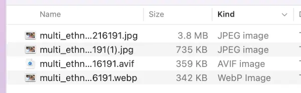

By David Logan | Published July 19, 2024 | Updated August 10, 2024
I come across a surprising number of web sites that have huge image sizes, sometimes larger than 2MB. These unnecessarily big images contribute to a bad user experience. They can also be detrimental for search engine rankings. But compressing images down to a reasonable size is remarkably easy.
Here’s my recommendations for images, in order of preference:
Here’s more information on each of these options…
According to caniuse AVIF has about 94% compatibility across web browsers in 2024. AVIF can achieve substantially smaller files sizes than jpeg with no loss of quality. Unlike jpeg, AVIF supports alpha channel transparency. AVIF can be used for animated images, similar to GIF but with better compression. And AVIF offers both lossy and lossless compression options (jpeg only offers lossy compression).
If you use AVIF you should consider using a fallback technique
with the <picture> element (see example
below).
According to caniuse WebP has about 97% compatibility across web browsers in 2024. WebP typically offers 25-35% smaller file sizes compared to jpeg at equivalent visual quality. WebP also supports alpha channel transparency, lossy and lossless compression options, and can do animations similar to GIF but with better compression.
When using WebP you should consider using a fallback approach
with the <picture> element (see example
below).
If you’re using jpeg images use MozJPEG to compress them. It can compress an image 50% to 80% without any quality loss. You can use the MozJPEG web interface, or use the command line tools.
To install the command line tools on Ubuntu or Debian-based
systems:
sudo apt install mozjpeg
On MacOS you can use brew: brew install mozjpeg
After installation of mozjpeg, you can use cjpeg,
djpeg, and jpegtran from the command
line.
Here's an image I found being used as a hero on a local government department's website — it's 3.8MB and has dimensions of 5167x3445 pixels. I opened the image in GIMP and exported it in WebP and AVIF formats using default settings at 80% compression. There was no noticable loss of quality. You can see it made quite a difference in size. Then I used MozJPEG to quickly and conveniently compress the jpeg, and ended up with a fairly reasonable 735kB with no noticable loss of resolution.
The original image takes about 4.3 seconds to load in my browser. If they had used the WebP format the image would probably take less than 0.5 seconds to load.
Using the <picture> element allows you to use
AVIF and WebP while still supporting older browsers that don’t
support those newer image formats. Here’s an example:
<picture>
<source srcset="image.webp" type="image/webp">
<source srcset="image.jpg" type="image/jpeg">
<img src="image.jpg" alt="Description of image">
</picture>
This code does the following:
<img> tag serves as a final fallback
for browsers that don’t support the
<picture> element.
There are a few nice GUI apps that make it convenient to compress images.
Here are some good web-based compression tools that are free to use.
Note: some modern build systems include image conversion/compression. Consult the documentation of your build system.